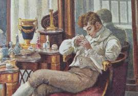

. . . . . . . Толпою нимф окружена, Стоит Истомина; она, Одной ногой касаясь пола, Другою медленно кружит, И вдруг прыжок, и вдруг летит, . . . . . . .

|  |
. . . . . . . Толпою нимф окружена, Стоит Истомина; она, Одной ногой касаясь пола, Другою медленно кружит, И вдруг прыжок, и вдруг летит, . . . . . . . |
|
|---|